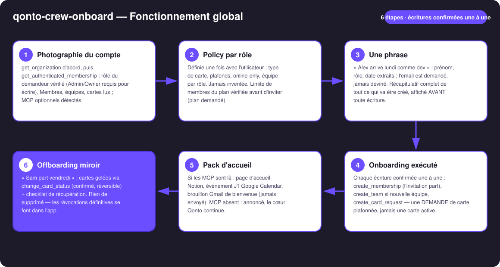
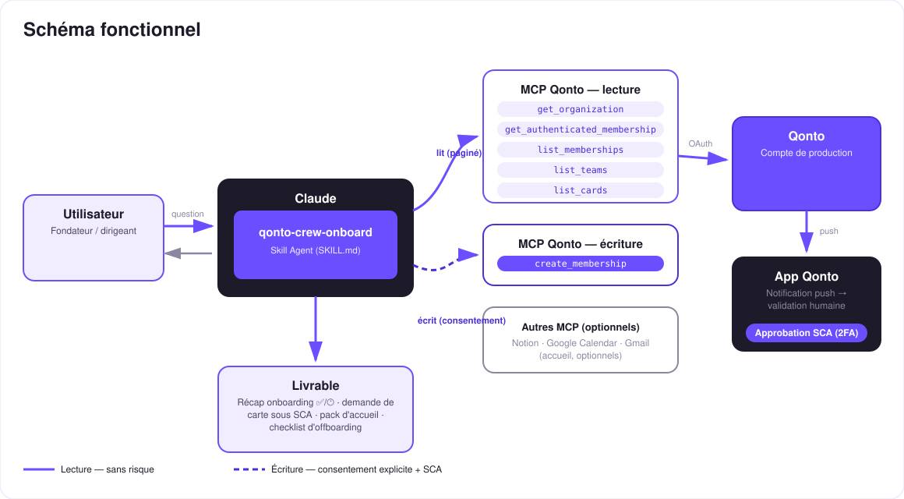

L'onboarding financier d'un salarié en une phrase — invitation, carte plafonnée, pack d'accueil.
À chaque arrivée, le dirigeant refait tout à la main : inviter la personne sur Qonto, créer sa carte avec les bons plafonds, préparer son premier jour. Le skill transforme ce rituel en une phrase :
Définie une fois avec l'utilisateur — type de carte, plafonds, online-only, équipe par rôle. Jamais inventée : rôle inconnu = questions.
« Alex arrive lundi comme dev » : invitation envoyée, équipe créée si nouvelle, demande de carte plafonnée conforme à la policy.
Page Notion, événement J1 Google Calendar, brouillon Gmail — si ces MCP sont connectés, sinon annoncé et le cœur continue.
« Sam part vendredi » : cartes gelées (réversible) + checklist de récupération. Rien de supprimé — les révocations restent dans l'app.
| Prérequis | Détail | Obligatoire |
|---|---|---|
| Compte Qonto production | Le skill s'adapte à toute organisation — get_organization d'abord, zéro donnée en dur | ✅ |
| Pays | Universel — membres, équipes et cartes fonctionnent pareil dans tous les pays Qonto (FR, DE, ES, IT, AT, NL, BE, PT) | ℹ️ |
| MCP Qonto connecté | Connecteur officiel (claude.ai / Claude Desktop), login OAuth | ✅ |
| Rôle Admin/Owner | Inviter et demander une carte l'exigent — vérifié via get_authenticated_membership, annoncé honnêtement sinon | ✅ |
| Policy par rôle | Décidée par l'utilisateur, jamais par le skill | ✅ décidée par toi |
| Sièges dispo sur le plan | Grille non lisible via MCP (get_subscription → 403) — le skill demande le plan et compte les membres avant d'inviter | ℹ️ vérifié en le demandant |
| Notion · Google Calendar · Gmail | Pack d'accueil optionnel, détecté dynamiquement | ⭕ |

list_memberships, invitation sautée avec la raisoncreate_team seulement si l'équipe n'existe vraiment pasget_subscription renvoie 403 sur le connecteur → le skill demande le plan, compte les membres, prévient avant d'inviter
Le modèle de sécurité, pas une limitation : les lectures sont sans risque ; chaque écriture exige une confirmation explicite dans la conversation. La carte n'est jamais créée directement — create_card_request produit une demande plafonnée conforme à la policy, approuvée dans l'app Qonto par un Admin/Owner avec sa propre SCA. Et l'offboarding gèle, il ne supprime pas.
| Rôle | Carte | Plafond mensuel | Online-only | Équipe |
|---|---|---|---|---|
| Développeur·se | Virtuelle | 200 € | Oui | Tech |
| Commercial·e | Physique | 1 000 € | Non | Sales |
| Ops | Virtuelle | 500 € | Oui | Operations |
⚠️ Tableau inventé pour l'exemple. La policy est toujours décidée par l'utilisateur — un rôle sans policy déclenche des questions, jamais une supposition.
| Étape | Qui | Détail |
|---|---|---|
| Gel des cartes | Le skill (change_card_status, confirmé) | Réversible — c'est le point : rien d'irrémédiable |
| Carte physique récupérée | Checklist | Avec le matériel (ordinateur, badge…) |
| Accès et outils | Checklist | Apps internes, notes de frais en cours, redirection email |
| Désactivation du membre | L'app Qonto | Révocation définitive — jamais faite par le skill |
| Sortie | Format | Quand |
|---|---|---|
| Réponse dans la conversation | Tableaux markdown : récap (✅ fait / 🕐 en attente SCA / ⏭ sauté), statut de la demande de carte, checklist | Toujours — c'est la base |
| Fiche d'onboarding | Fichier/artifact HTML une page : qui arrive, quand, ce qui est prêt, ce qui attend | Si l'hôte affiche les fichiers ; repli automatique sur les tableaux |
| Page Notion · événement Calendar · brouillon Gmail | Pack d'accueil (le brouillon n'est jamais envoyé par le skill) | Si ces MCP sont connectés |
La démo ≤ 3 min jointe à la PR suit le storyboard : le rituel manuel → la policy définie une fois → « Alex arrive lundi comme dev » → l'invitation partie, la demande de carte plafonnée en attente de SCA, la page d'accueil prête → l'offboarding-gel en une commande. Prénoms fictifs, comptes de test. Le script détaillé de tournage est conservé en interne (hors dépôt).
| Idée | Effort | Note |
|---|---|---|
| Policy persistée dans un doc Notion relu à chaque arrivée | Faible | Multi-MCP optionnel — la policy vit chez l'utilisateur |
| Onboarding par lot (« 3 stagiaires arrivent le 1er ») | Faible | Même workflow, récap groupé, confirmations une à une |
| Rappel J-1 au manager (Google Calendar) | Faible | Détection dynamique du MCP |
Suivi des demandes de carte (list_requests) | Faible | « Où en est la carte d'Alex ? » |
| Passerelle avec qonto-reimburse-batch | Moyen | Les premiers frais du nouvel arrivant — lecture des membres partagée |
create_membership, create_team, create_card_request, change_card_status) confirmée une à une ; une demande en attente n'est jamais présentée comme exécutéeget_subscription 403) → plan demandé, membres comptés, avertissement avant d'inviter